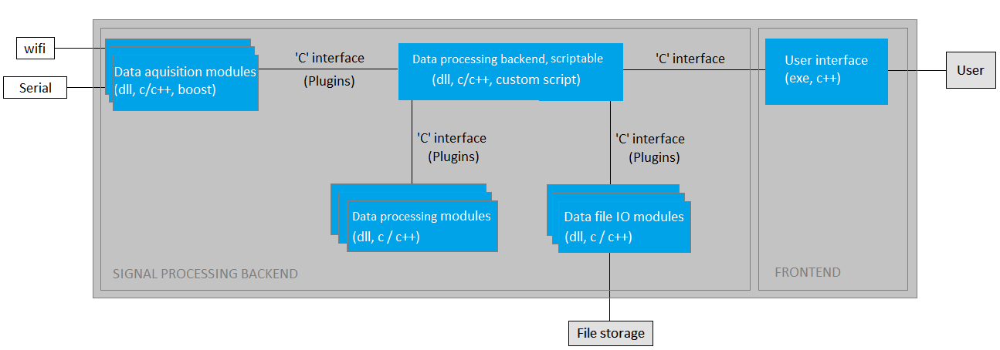
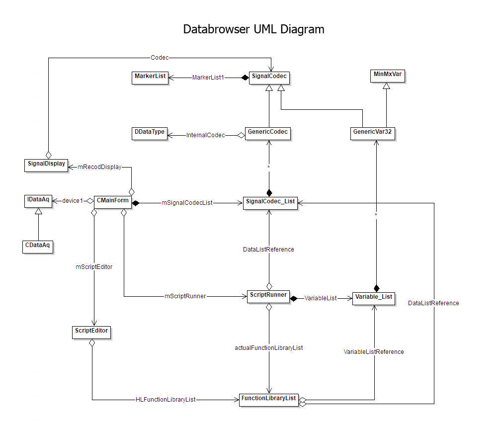

Before reading this document, please read the SigForge user guide.
What is SigForge
SigForge is a plugin based signal processing library set with a basic frontend, all developed in c and c++11. Some of its modules are using 3rd party libraries like boost.
The signal processing algorithms can be executed by running scripts. During script run, the corresponding c functions are called.
SigForge is developed under Windows, but except the frontend, which uses the Win32API heavily, the code is easily portable.
SigForge’s basic structure
SigForge has 2 main blocks: the backend, and the frontend. The application is designed based on the MVVM (model-view-view model) user interface design pattern
[https://en.wikipedia.org/wiki/Model%E2%80%93view%E2%80%93viewmodel]
, the backend being the model, and the frontend the view and the view model.
The data flow is initiated by the upper layers (view, view model), using pull model
[https://ptolemy.berkeley.edu/papers/03/PushPullProcessing/PushAndPull.pdf]
.

Due to the MVVM architecture and the usage of pull model, the backend is totally detachable from the user interface, making it useful for automation, standalone data acquisition, or application specific usage by attaching an application specific user interface to it.
Backend’s basic structure
The backend is a dynamic library. It serves a dynamically importable c interface for its users (usually frontends).
While the backend serves as the model for the frontend, the philosophy behind the MVVM design pattern is also followed by the backend’s sub-modules, so the pull model is.
The "onion like" structure of MVVM, and the usage of the pull model on all the interfaces allows an easily traceable data flow.
-
Data acquisition modules
-
Signal processing modules
-
Data file input-output modules
These modules are located in specific directories, and are loaded at startup. Though, there is a setting possibility to reload the signal processing dlls before every script run, in order to speed up signal processing algorithm development. This setting is switched on by default.
SigForge’s plugin modules
Data acquisition
These modules are connecting to the drivers of data acquisition devices.
Signal processing
These modules contain signal processing algorithms.
Data file input / output
These modules can read and write data files.
SigForge threading model
SigForge backend’s functions are not synchronized; therefore they should be called by only one thread. If they are called by multiple threads, the synchronization of the backend calls (Interval() calls, script runs, and the call of data getter functions) is the responsability of the caller.
The "IBackend::Interval()" function should be called by the user (frontend) in every 20ms, and the backend should do all its job during these calls.
After all the data is collected and / or processed during an "Interval()", the function returns, and the fronted has the possibility to view the data which relies in the backend, or initiate script runs.
While the backend module itself is not thread safe, in some plug-ins might be a need for multiple threads, especially in data acquisition modules. These modules needs to be thread safe, and should synchronize all the calls arriving from the backend.
-
RefreshDataWindow
-
DisplayData
-
SystemExit
These calls are always arriving from the thread which initiated the script run or are calling the backend’s Interval() function.
Classes and interactions
SigForge has an ISignalCodec interface for its data representations. This interface has block setter and getter functions.
There is a CGenericVar class inherited from ISignalCodec, which also allows direct data access for its buffers (having 2 dimensionally addressable data relying in a continuous memory space in order to minimize the number of cache faults).
ISignalCodec can be parent of all types of data, including file codecs and data acquisition classes, while CGenericVar’s data is directly addressable, which restricts its usage.
In short: ISignalCodec is more generic, while CGenericVar is faster.
The backend has 2 data lists, one for generic ISignalCodec objects, and one for CGenericVar objects.
A CGenericVar object can anytime be moved into the list of ISignalCodec objects, while an ISignalCodec object can only be copied into a new CGenericVar object, in order to add the newly created object into the list of CGenericVar objects.

This UML diagram is obsolate. TODO: update it.
SigForge scripting
Syntax
…
Basic functionalities
FUNCTION NAME |
FUNCTION PARAMETERS |
DESCRIPTION |
DataAq |
<module index>, <module specific setting>, <sampling rates>, <gains> |
Starts data acquisition |
DisplayData |
<variable name to display> |
initiates a view for the specified variable, and moves it from the variable list to the data list. |
FileOpen |
<file name>, <data name the data to be stored> |
opens a file for reading, keeps it open, and makes its content reachable via a data object with the name specified by the second parameter |
NewFileDataBasedOnData |
<new data name>, <template data name>, <data chunk size in miliseconds>, <codec_type>, <filename>, <active channels> |
see user guide. |
NewMemoryData |
see user guide. |
see user guide. |
OnDataChange |
||
RefreshDataWindow |
<data (window) name to refresh> |
refreshes the window specified |
SaveDataToFile |
<data name>, <file name>, <data chunk size in miliseconds>, <codec type> |
saves a data to a file, and closes the file. The data remains untached, and will have no connection to the saved file. |
SetStopOnFirstError |
||
SystemExit |
||
SystemInterval |
see user guide. |
see user guide. |
TriggerDataChanged |
see user guide. |
see user guide. |
Environment and development
SigForge is built using Code::Blocks IDE (C::B)
[https://codeblocks.org]
. The whole project consist in 23 projects currently, including the plugins and test projects.
-
You should have access to the SVN repository
-
Please extract the developer package file from repo: "\ToolsBinaries\IDE\ITMedDev_Program Files.7z" into "c:/Program Files"
-
Alternatively, you can install Code::Blocks IDE from http://www.codeblocks.org/, and use a real 32 bit MinGW gcc compiler (SigForge and the dll projects need a 32bit compiler).
-
Start C::B, and open the workspace "SigForge.workspace"
-
Activate the project "SigForge" by double-clicking it.
-
Right click on "Workspace" → "Rebuild workspace".
Workspace "SigForge.workspace" should clearly compile with the GCC/mingw version included in the package above (GCC 5.1).
Please follow the developing guidelines and coding conventions coding conventions.
C::B setup
Please use C::B’s source code formatter plugin: "Menu"→"Plugins"→"Source code formatter" while coding.
Please set up C::B’s source code formatter in "Menu"→"Settings"→"Editor"→"Source code formatter"→"Padding" as follows:
Check the "Insert space padding around operators" and the "Insert space padding after commas" boxes. Leave others unchecked.
C::B useful keyboard shortcuts
-
switch active editor tab between the current and the latest activated file(s): LEFT ALT + LEFT ARROW
-
switch active editor tab between the current and the firstly activated file(s): LEFT ALT + RIGHT ARROW
-
block uncomment: CTRL + SHIFT + X
-
block comment: CTRL + SHIFT + C
-
block uncomment: CTRL + SHIFT + X
Coding conventions
A typical class example looks like this:
class CClass
{
int m_member_variable;
void MemberFunction()
{
...
}
};-
"I" classes: Use "I" prefix for classes having at least one pure virtual function (ie for non-instantiable classes, possibly interfaces).
-
"T" classes: Use "T" prefix for instantiable classes having only deep-copyable members, and valid copy constructors. Structs typically, where you can use "=" safely, and cheap.
-
If a "T" class have an expensive copy constructor, it is more likely to name it a "C" class even if it has deep copy implemented.
-
"C" classes (most common): Use "C" prefix for instantiable classes having copy constructors performing shallow copy only (ie have at least one pointer member pointing to a data whose lifetime is controlled by the actual or some other object.).
-
Templates are just templates for classes. Prefix them like the other classes. (likely "C", but not exclusively)
-
Enumerations: prefix enumerations with "E"
Public / private. Please note the precedence of these in the class examples after this section.
Please don’t use prefixes to specify a member or function argument type. however, please use prefixes to indicate the scope of those.
-
Use "m_" prefix for members,
-
Use "a_" prefix for function arguments.
-
(You may also use "l_" for locals, or anything else than m_ or a_ can just be local.)
Please use virtual destructor, and know how it works. Also know how virtual functions work. Please check docs for overriding (and overloading) if you don’t know what these are.
Don’t use globals, neither variables, nor functions. If it’s really needed, use a singleton pattern, and feel free to use static member functions in classes instead of functions in global scope.
In case your member function is not using any member variable, make your function static. Tend to use static member functions.
Lower case members, function arguments, and local variables.
Note the way of indentation. Please indent code as you can see in the examples after this section.
Note the way how the bracelets, brackets, spaces etc. are used in the functions bellow. Use them likewise in your code.
Don’t afraid of too long code lines, especially if they are comments. We have large monitors. And also a right button on our mouse, or our touch pad - try it out in a C::B editor.
Don’t use multi line function calls. If you don’t use them, a new line will always inform you about that something new is going to happen.
If you are commenting, use DoxyBlocks comments in the format bellow.
Use comments mostly for interfaces, and avoid unnecessary commenting.
A Doxy comment like "The output data of the function" for an argument named "a_output_data" is valid, but has no added value. Still, consumes space and developer time to read.
Use [in] and [out] for arguments if it’s appropriate, though. It might be informative, and it is displayed on a potentially generated doxy HTML differently.
Don’t create directories or files in repo containing the word "obj" or "svn", as it hardens cleaning up the repo.
Please use DrMemory to check for unaddressable or uninitialized accesses and leaks. Search for a binary release starting from here: drmemory.org
Please run the tests before every commit (SigForge test documentation). Do not commit your change if any of the tests are failing.
If you are developing a feature, also write a test for it.
Ask for code review if appropriate.
Feel free to adapt old code to align these conventions.
Code examples
struct TClass
{
int m_integer_member;
int m_some_data_that_is_owned[10];
void PublicMemberFunction()
{
...
}
};
class CClass
{
int m_integer_member;
int* m_pointer_to_some_data_that_is_owned;
void PrivateMemberFunction()
{
...
}
public:
CClass()
: m_integer_member(0)
{
m_pointer_to_some_data = new int[10];
}
virtual ~CClass()
{
delete[] m_pointer_to_some_data;
}
void PublicMemberFunction()
{
...
}
};
struct TMarker
{
enum ESnapMode
{
ESnapMode_None,
ESnapMode_ToGrid,
ESnapMode_ToOthers,
ESnapMode_ToLinesOnly
};
double m_start_sample;
double m_length;
TMarker();
};
/** \brief Some interface description here.
* \brief Some more description lines here.
*/
class ISignalCodec
{
public:
virtual bool GetDataBlock(double** a_buffer, unsigned int* a_start, unsigned int* a_nrelements, int* a_enable) = 0;
virtual bool WriteDataBlock(double** a_buffer, unsigned int* a_start, unsigned int* a_nrelements, int* a_actchans = 0) = 0;
};
class CVariable: public ISignalCodec
{
public:
/** Use "virtual" and / or "override" specifiers for an overriding virtual function.
* If you want your class to be final, write private constructors and factory functions, or use "final" specifier, or both. */
virtual bool GetDataBlock(double** a_buffer, unsigned int* a_start, unsigned int* a_nrelements, int* a_enable)
{
}
virtual bool WriteDataBlock(double** a_buffer, unsigned int* a_start, unsigned int* a_nrelements, int* a_actchans)
{
}
};
typedef void (EObject::*On_Changes) (CControl_Base* a_sender, int a_chan_indx);
class CSetupChannels: public CControl_Base
{
unsigned int m_checkboxes_id;
CBitButton* m_button_select_none;
TVisualization* m_visualization;
public:
CSetupChannels(const char* a_caption, int a_posx, int a_posy, int a_width, int a_height, ISignalCodec* a_signalcodec = 0);
virtual ~CSetupChannels();
/** \brief Some function description here. A function like this does not require any comments.
* \param[in] a_src Some parameter description here. Use comments only if needed.
* \param[out] a_dst Some parameter description here. Use [in] and [out] if it's appropriate though. It might be informative.
* \param a_size Some parameter description here.
* \return void Some return value description here.
*/
static void Square(const int* a_src, int* a_dst, unsigned int a_size)
{
for (unsigned int i = 0; i < a_size; ++i)
{
a_dst[i] = a_src[i] * a_src[i];
if (a_dst[i] == 1234)
break;
}
}
/** Use "static", if the function has no need for class members. */
static int SomeOtherStaticFunction(const int* a_src, int* a_dst, unsigned int a_size)
{
int result_value = 0;
for (unsigned int i = 0; i < a_size; ++i)
{
a_dst[i] = a_src[i] * a_src[i];
if (a_dst[i] == 1234)
{
result_value = 1;
break; /** You can use break in your code wherever you want, but don't return in the middle of a function. */
}
}
return result_value; /** Always return here, on the end of the function. */
}
const unsigned int getID() /** Use "const" where it applies: for functions, and also for arguments. */
{
return m_checkboxes_id;
}
};Dr. Memory error checking
Please download drMemory 2.2: https://github.com/DynamoRIO/drmemory/wiki/Downloads (The actual release is 2.3, but it always crashes)
Start drmemory from command line by giving the application path as an argument (optionally navigate to the directory of drmemory):
.drmemory.exe repo path\Development\Applications\SigForge\SigForge\App\SigForge.exe
Perform the actions with SigForge you want to check, then exit the application (not the drmemory.exe console window, but SigForge).
After exit, a notepad window with a text will popup, possibly containing a lot of errors.
-
total unaddressable access(es)
-
total uninitialized access(es)
-
total invalid heap argument(s)
-
total GDI usage error(s)
-
Leaks in periodically called functions should also be 0.
-
Leaks in functions called just once are acceptable, but try to avoid these leaks also if possible mostly in order to reduce the "noise" in the log file.
CppCheck static code analyzer
-
Download CppCheck 2.1 from here: http://cppcheck.net/ and install.
-
Add CppCheck to the PATH
-
In the Windows search bar type system variables and choose Edit the system environment variables
-
In the pop-up window (System properties) choose Environment Variables… near in the bottom right corner
-
In the pop-up window (System Variables) select Path from the System variables and click Edit
-
In the pop-up window (Edit enviromnent variables) click New and set the folder where CppCheck is install, the default install directory is C:\Program Files\Cppcheck or copy this if you installed with defaults
-
Click OK in Edit enviromnent variables and System Variables and System properties windows
-
Restart the Windows
-
-
Set CppCheck in C::B
-
Open C::B → Settings → Environment
-
In the left pane find CppChecp/Vera++
-
In CppCheck application copy this: cppcheck.exe
-
In CppCheck arguments copy this: --verbose --enable=warning,performance,portability --language=c++ --xml
-
-
You can run CppCheck from the Plugins → CppCeck menu
Asciidoc document generation
-
This file is generated by AsciiDoc. The source text file is located here: repo path\Development\Applications\SigForge\src\DevDoc\devDoc.txt
-
AsciiDoc is implemented in Python 2.x, which means a Python interpreter (version 2.4 or later) must be installed to execute AsciiDoc. (Python 3.x is not appropriate for AsciiDoc.)
-
If you extracted the developer package, then you have
-
python located here: c:\Program Files\CodeBlocks\MinGW_64\opt\bin\python.exe
-
and Asciidoc in c:\Program Files\asciidoc.
-
-
Alternatively you can download the
-
Python 2.7 installer package (*.msi) from http://www.python.org and install the product to another folder.
-
And download the AsciiDoc *.zip file from http://sourceforge.net/projects/asciidoc/ and unpack it into a folder such as C:\Program Files\asciidoc.
-
-
Open Total Commander, click the menu Start, then click the menu item Change start menu….
-
Click the button Add item… and type AsciiDoc.
-
Into the field Command, type: c:\Python27\python.exe
-
Into the field Parameters, type: "c:\Program Files\asciidoc\asciidoc.py" -o "%t%o.html" "%p%n", then click Ok.
-
When using AsciiDoc in Total Commander, select Start/AsciiDoc from the menu. For the command to work you should select a source *.txt file in one panel of Total Commander and have the destination folder in the other panel.
(while editing a doc, you may keep open a Total Commander and a browser tab, then after an edit, just press LEFT ALT + S, then ENTER, and refresh the browser tab to view your changes.)
Sourcetrail (Optional)
Sourctrail can parse C/C++ (and others) project source files and can generate different views of the structure of the code.
-
Download it from here! (tested version is 2020.2.43)
Sourcetrail can use Code::Block project files (.cbp).
-
Open Sorcetrail
-
Click Porject → New Porject… or use Ctrl + N
-
Add a name for the project and set the location where you want to save
-
Click Add Source Group in the bottom. (A Source Group is like a Code::Blocks project. It means you have to make as many Source Group as many Code::Blocks project you want to include.)
-
In the left choose C++, then C/C++ from Code::Blocks, then click Next
-
Set a name for the Source Group. Set the same as the Code::Blocks project name.
-
Set C+\+ Standard to C++11 and C Standard to C11.
-
Set Code::Blocks project file
-
In the Header Files & Directories to Index click Select from Code::Blocks Project
-
Click Check All and then Save
-
Click Create in the bottom.
-
-
Repeat the 4. point with every Code::Blocks projects you want to add
And the result will look like this: